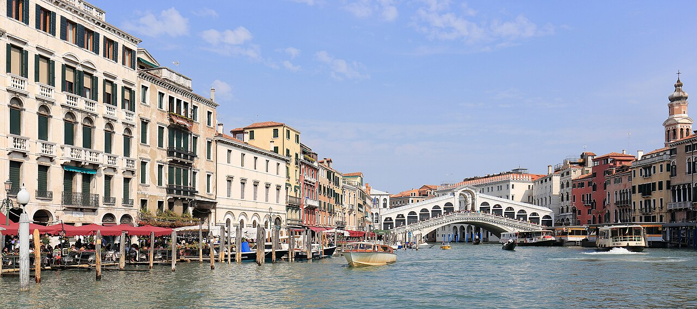

Италия

Плутали вчера по улочкам, а сегодня гондола несёт вас по Гранд-каналу — так выглядит Италия изнутри: обед на два часа не смущает никого, кофе пьют у стойки, а красота здесь — норма жизни, а не открытка. Венеция стоит на миллионах деревянных свай и не считает это достижением: просто дом. Утро начните с рынка Риальто — торговцы просыпаются раньше толп, и рыба пахнет морем, а не туристическим сезоном. Днём сядьте на вапоретто номер 1, идущий во всю длину Канале-Гранде: за цену чашки кофе вы получите самый честный обзор города с воды. А вечером сбегите со Святого Марка на Дзаттере: пьяцца, аперитив, крики детей и местные, а не фотоаппараты. Италия учит простому правилу: красоту не нужно «снимать», с ней нужно жить по расписанию — завтрак, рынок, обед, сиеста, прогулка. Рим даёт двухтысячелетние слои, Тоскана — пейзажи, от которых замирают ленты новостей, Сицилия — вкус, за который спорят и северяне, и южане. Одна поездка не решит, кто прав, — придётся вернуться. Это лучшая новость из всех возможных.
Что знать перед поездкой
- Кофе у стойки — дешевле и аутентичнее
- Колизей и Ватикан бронируйте заранее
- Вечером — passeggiata вместе с местными